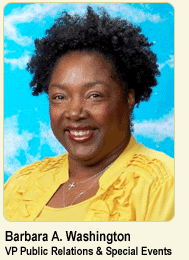

Barbara Washington
Vice President, Public Relations & Special Events
From the heart of the Mississippi Delta and fresh from an extended stay in Germany, Barbara A. Washington stepped into the Gateway City three decades ago. With a heaping helping of southern hospitality and a dash of European flair, Washington has the unique ingredients for success in the world of public relations, fund-raising and special events. Today, she is the vice president of public relations and special events for the Mathews-Dickey Boys' & Girls' Club, a St. Louis-area youth organization serving more than 40,000 young men and women annually.
The St. Louis public relations veteran's affiliation with Mathews-Dickey spans nearly 30 years, both as a volunteer and employee. Washington is the official Club spokesperson, and directs and manages communications with the Club's key audiences. This encompasses members and parents; staff; volunteers and alumni; corporate sponsors; funding institutions such as the United Way of Greater St. Louis; community leaders; and the general public. She manages and directs a professionally-skilled volunteer force of hundreds who assist with fund-raising, program-development and publicity. Washington also devotes countless hours supervising hundreds of interns from local, statewide and national universities, many of whom have landed successful public relations and marketing jobs with Fortune 500 companies.
Washington's efforts have broadened the Club's local and national reputation, generating publicity in Newsweek, Sports Illustrated, Time and U.S. News, and a cross-section of area papers including the St. Louis American, Argus, Jewish Light, Ladue News, Post-Dispatch, Sentinel and Town & Style.
She has also been successful in creating media attention for the Club in the local broadcast arena including: Fox 2/KPLR 11, KMOV News 4, NewsChannel 5 and Nine Networks. Radio stations KMOX and The Big 550 KTRS have taken leading roles in sponsoring Club activities, and nearly every metropolitan area radio station has provided public service announcements for the Club. High-profile media personalities have been successfully recruited to spread the Club's message through their participation as speakers and emcees. The noteworthy list includes CBS' Connie Chung and Dr. Debbye Turner; NBC's Bob Costas, Katie Couric, Bryant Gumble and Janice Huff; CNBC's William Bolster; and CNN's Gail Evans.
Washington's specialty for non-profit fund-raising is spinning a shoestring budget into a profitable event. And in the early years of building the PR & Special Events Department, Washington developed a knack for forging partnerships with corporate communications professionals and PR firms to spread positive messages about the organization.
She established and annually oversees three prominent community-wide fund-raisers that generate nearly $1 million for the Club's programs. These events are the Clifton Davis "Say Amen" Gala benefiting literacy programs; the Sheer Elegance Fashion Show, a holiday fund-raiser for the Club's Girls' Program; and "Jack Buck Celebrity Night with the Stars & Tony LaRussa," benefiting the Reviving Baseball in the Inner-city Program.
She also established "The Spirit of St. Louis" Dinner Roast (1995-2000), which played a key role in helping the Mathews-Dickey Endowment Fund reach the $1 million mark. Washington directs a number of Club programs including "The Sky is the Limit," a career-readiness program pairing 250 young women from 20 area school districts with 250 professional businesswomen from the St. Louis-metropolitan area; and the Annual Alumni Reception, which highlights the achievements of former Club members. For its achievements, "The Sky is the Limit" was lauded by Time Inc. at the 1997 National Urban League Awards Dinner in New York.
To commemorate the Club's 40th anniversary and the new millennium, Washington developed two new programs in 2000. These were the "Maleness to Manhood Workshop Series", which focuses on self-esteem, moral development, educational- and career-achievement, leadership and responsibility, and a special computer initiative for Club members and their parents alike.
And in 2002 Washington was instrumental in procuring a $225,000 grant from the Missouri Foundation for Health to provide free orthodontic care for deserving youth at Saint Louis University's Center for Advanced Dental Education and to present a community-wide Health & Wellness Fair at the Club.
To celebrate the Club's 50th anniversary in 2011, Washington spearheaded a year-long series of events. The celebration included the dedication of the "In the Footprints of Jack Buck Walk of Fame," in celebration of a successful $1 million Operational Reserve Campaign. The centerpiece was the President's Day Parade, commemorating the anniversary of President Reagan's 1982 visit. A centerpiece of the event traced the Club's humble beginnings from its founding under a shade tree in Handy Park, to its first home at the old Bob Russell Sporting Goods store, to its current facility. This parade inspired the contribution of the 30-acre Bob Russell Park to the Club by the Surrey Lane Athletic Association in 2011.
For Club members, Washington's most visible role is that of a counselor, mentor and friend ... a role that has earned her the affectionate, unofficial title of "Club Mom."
Prior to joining Mathews-Dickey, Washington worked in financial institutions, economic development and convention planning. Her spirit of volunteerism was evident early in her career during a five-year stint with General American Life, where she was chairperson of the company's Red Cross Blood Drive in St. Louis (1984), and secretary of the Women's Society (1983).
Her favorite hobby is singing gospel music (in the classic style of Mahalia Jackson), country, adult contemporary and patriotic music, which landed her the opportunity to perform the National Anthem for the "Cardiac Cardinals" football team and baseball Redbirds at Busch Stadium in St. Louis.
Washington received the "Spirit of Women" award at a national ceremony in Washington, D.C., where she performed "Amazing Grace" at the special request of actress Linda Evans. She also has conducted many memorable vocal performances with St. Louis Cardinals' organist Ernie Hays; for the Press Club of Metropolitan St. Louis; Washington Times' American Leadership Conference; the first and second anniversary memorials of September 11 at St. Louis' City Hall; the Missouri Bankers Association; SSM HealthCare Awards Dinner and Diversity Symposium with KMOX Radio Personality Carol Daniel; Grand Opening of the Renaissance Grand Hotel with Marriott International Chairman Bill Marriott; opening ceremony of the "No Child Left Behind Conference" with U.S. Secretary of Education Rod Paige; and for actor Clifton Davis' 59th Birthday Party.
Washington orchestrated two successful benefit concerts by gold-record-selling, national recording artist Tyrone Davis for the Club's sports program in 2003 and 2004, and with R&B great A'ngela Winbush for the 2011 "Say Amen Gala."
In 2004, Washington released "Calvary Lord," a gospel CD, to establish a scholarship foundation for "The Sky is the Limit" career-readiness program. The campaign raised $40,000 for scholarships through the sale of the CD at $20 each, with the proceeds announced at her 50th Birthday Celebration on St. Patrick's Day, March 17, 2005. Mayor Francis Slay hosted the concert at City Hall and presented Washington the City of St. Louis Crystal Paperweight in honor of her achievements. Washington released two follow-up CDs in 2009: "Down by the Riverside," focusing on service, and "Season's Changing," a collection of original contemporary selections penned by her son, Professional Recording Artist Jamie "King James" Dennis. The fourth CD, titled "Love at Last," focusing on the all-powerful love of God, is scheduled for release in early 2012.
Washington is active in a variety of professional and charitable organizations, including the National Association of Female Executives, National Federation of Press Women (NFPW) Missouri Affiliate, Missouri Community Service Commission, Public Relations Society of America and University of Missouri St. Louis "Women's Mentoring Project." She is a member of the St. Louis Post-Dispatch's Community Advisory Board, Zonta Club of St. Louis and its Individual Enrichment Awards Committee, and Press Club of Metropolitan St. Louis Board of Directors.
As the 2002-03 president for the International Special Events Society (ISES) — Missouri Chapter, she guided the organization to an international "Spirit of Excellence" award for outstanding educational programming, and represented the chapter at the 2002 Conference for Professional Development in Sydney, Australia. In recognition of her efforts, Washington was the first woman elected to the St. Louis Amateur Baseball Hall of Fame, and has received the ISES President's, Press Club Catfish and NFPW — Missouri Affiliate Quest awards. She was Event Solutions magazine's "Non-Profit Organization Planner of the Year" finalist, spotlighted in the "Who's Who in Black St. Louis," and recognized with awards from the Annie Malone Children & Family Service Center's "Making A Difference" program; Faith House's "Real People, Reel Stars" Hellenic Spirit Athena; Top Ladies of Distinction Teen Service; Archway Chapter of The Links, Incorporated Services to Youth and three-time ISES Missouri Chapter Louie for Best Event Produced by a Non-Profit. She also was tapped by the Older Women's League (OWL) as a "Woman of Worth" honoree, and selected as the Voice of Midlife and Older Women's 2011 keynote speaker.
Washington has studied journalism and communications at Fontbonne College, St. Louis University, and the Maryland Extension University in Nuremberg, West Germany. She also has earned the Certified Special Event Professional (CSEP) designation, the hallmark of achievement in the events industry bestowed by ISES.
The Mississippi native is the proud mother of two sons: Jay Washington, Sr., a St. Louis area business professional, and music vocalist, producer and entrepreneur Jamie "King James" & "KP" Dennis. She also has nine grandchildren: Edward, Juwuan, Taron, Toryon and Vallisha Dennis; Keon Spencer; DeMont'e, Dwight and Jay (Jr.) Washington.
Washington is available for speaking and singing engagements for civic, corporate and non-profit events. For information, call Bill Fronczak at (314) 382-5952, ext. 228, or Washington at (314) 382-5952, ext. 228.